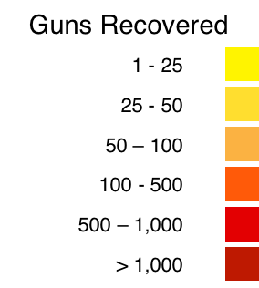

Tracing the Movement of Illegal Guns
Select the year to display
2012
2011
2010
2009
2008
guns recovered in the US originated in
. This represents
of all guns recovered in the US for this year, and equates to
guns traced per 100,000 residents.
Where these Guns were Found
